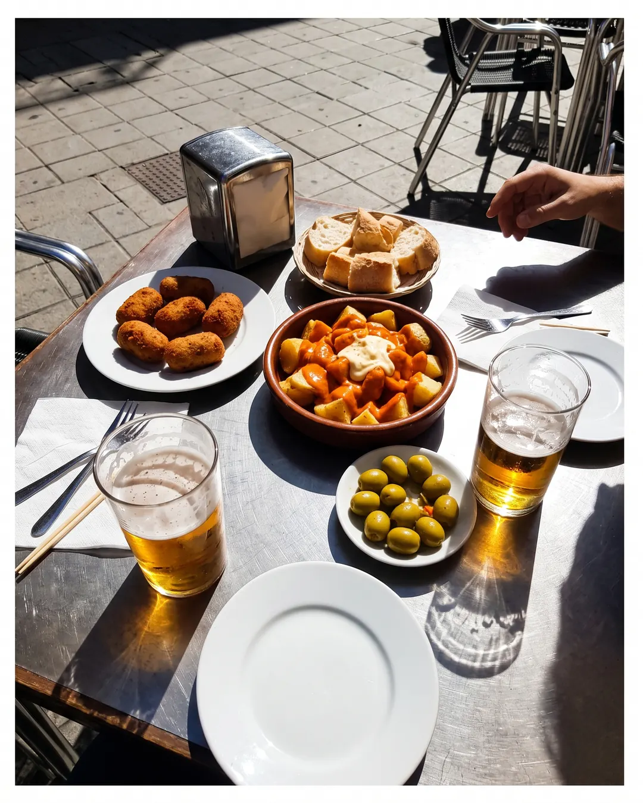
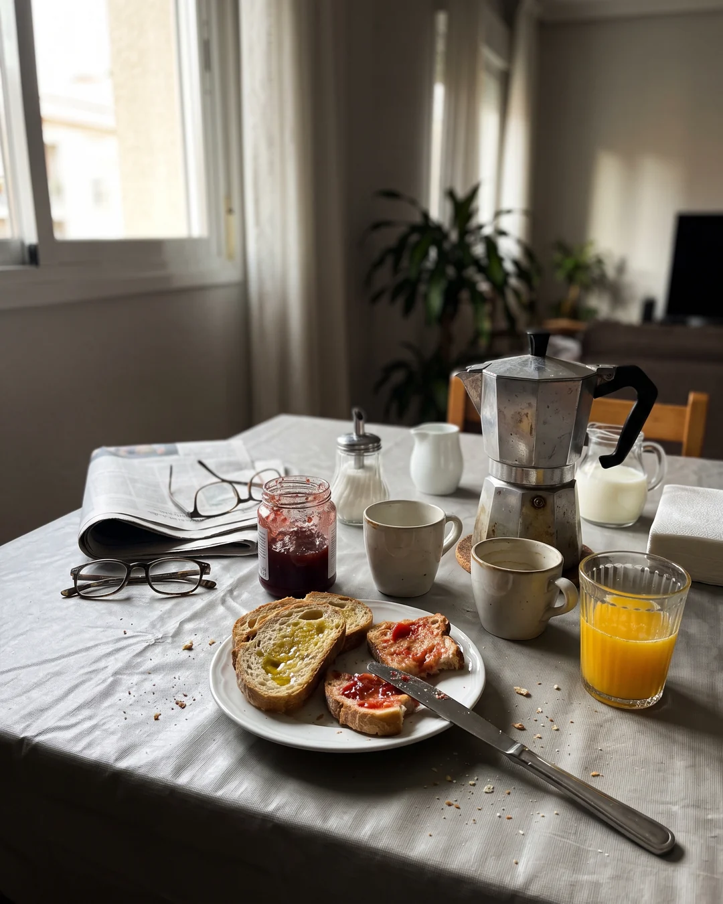
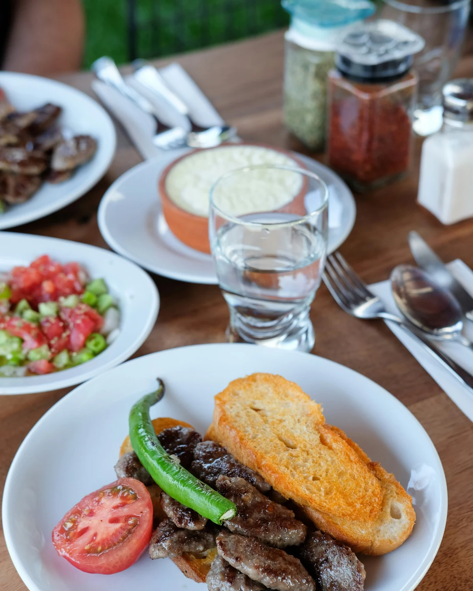
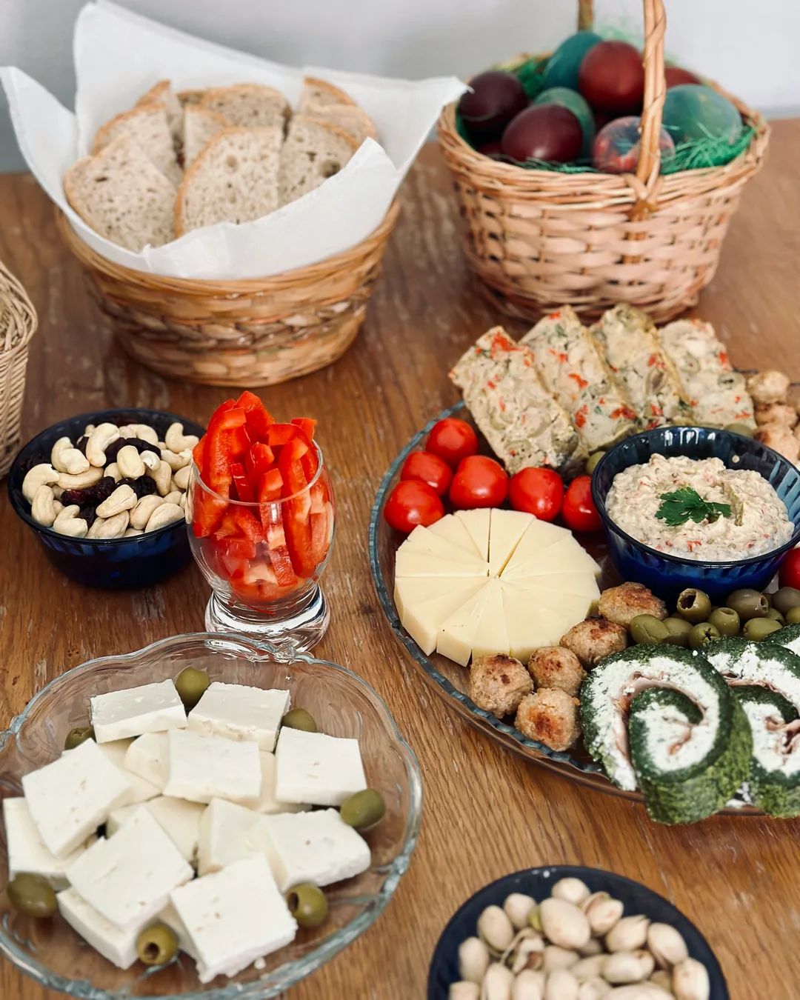
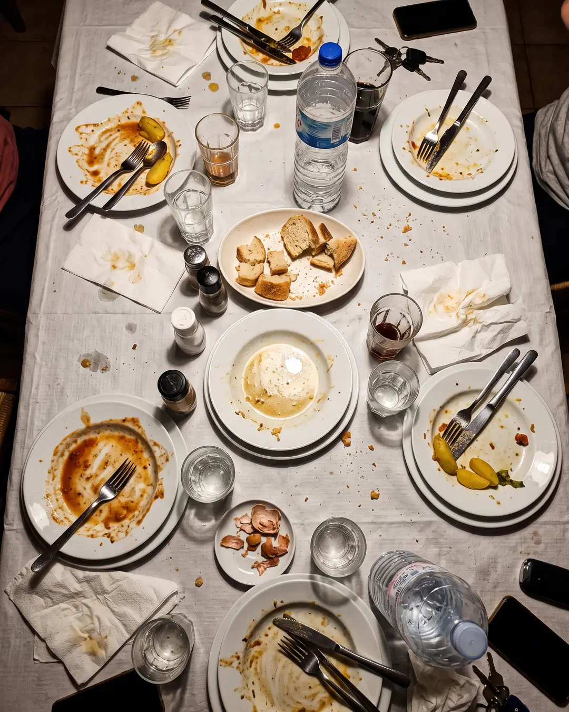

Case #5 · Table with food
Images
-

AI
The suspect's confession
A terrace table with shared tapas: croquettes, patatas bravas, olives and small beers, with direct sun and hard shadows.
-

AI
The suspect's confession
A Sunday breakfast table with toast, a stovetop coffee maker, orange juice and a folded newspaper, in window light.
-

REAL
Real photograph
-

REAL
Real photograph
-

AI
The suspect's confession
A dining table with the leftovers of a family dinner: half-finished plates, crumpled napkins, a water bottle and bread, seen from above.
Fact or Fake
-
FAKE “Sushi originated in Indonesia.”
Its predecessor, narezushi, is believed to have appeared in mainland Southeast Asia and southern China.
- It preserved fish by fermenting it with rice.
- It later reached Japan and evolved into modern sushi.
-
FACT “Originally, ketchup had no tomato and was made with fish.”
It comes from a southern Chinese sauce, "kê-tsiap", made with fermented fish and spices.
- Tomato was added in the 19th century.
-
FAKE “The oldest restaurant in the world is in Madrid, and its oven has been lit for over 500 years.”
Sobrino de Botín in Madrid holds the Guinness record for oldest restaurant, but it was founded in 1725.
- The restaurant says its oven has been lit since then, about 300 years.
-
FAKE “Carrots were originally pink.”
The first cultivated carrots were mostly purple, yellow or white.
- The orange variety became popular later in Europe.
-
FACT “Nutella was born from a global crisis.”
After World War II cocoa was scarce and expensive, so in 1946 Pietro Ferrero mixed it with hazelnuts.
- The Italian pastry maker used hazelnuts, abundant in Piedmont.
- The cream was renamed Nutella in 1964.